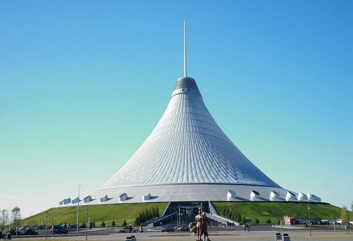

За недолгие годы своего существования ТРЦ Хан-Шатыр стал популярной достопримечательностью,
к которой организуются целые экскурсии в Казахстане.
Огромный 150-метровый “шатёр“ торгового центра виднеется уже издалека,
органично вписываясь в архитектуру окружающих сооружений. Попав внутрь,
можно провести чуть ли не целый день - так много интересного сосредоточено на площадях Хан-Шатыр.
Это многочисленные магазины, рестораны, интернет-кафе, зелёная оранжерея,
огромная парковка и даже крупный аквапарк с тремя бассейнами и настоящим песочным “пляжем”.
Главная страница
Главное меню